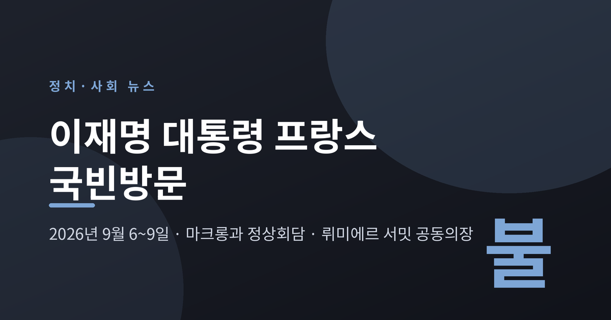
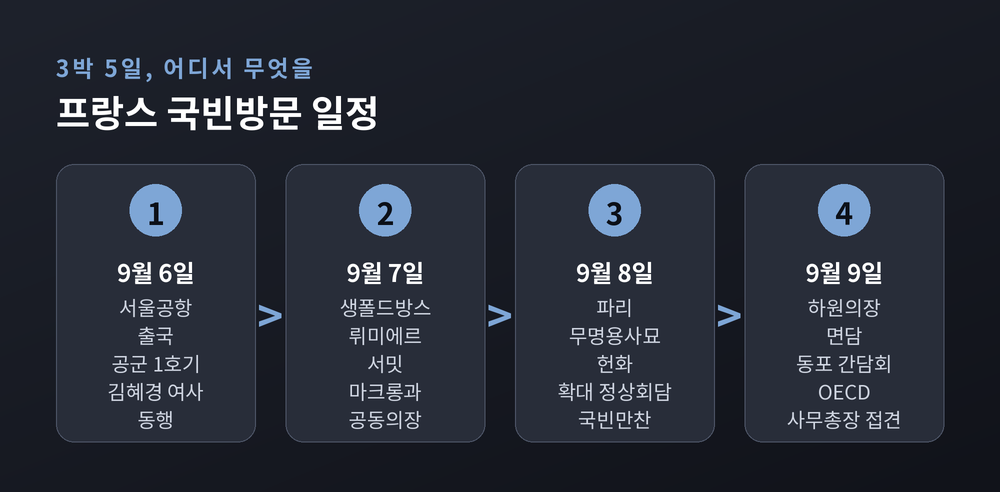
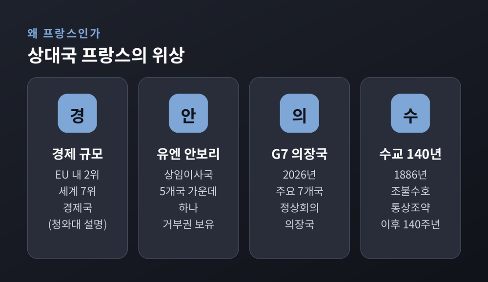
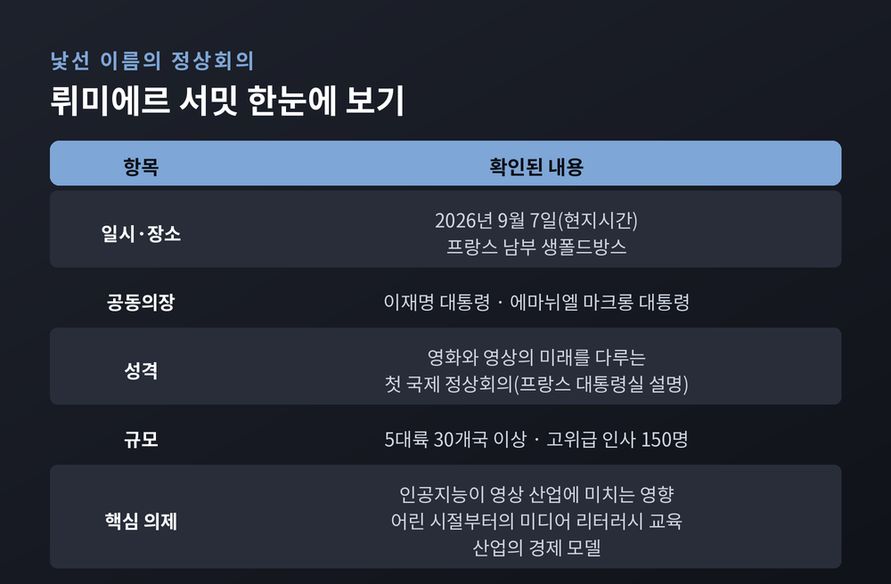
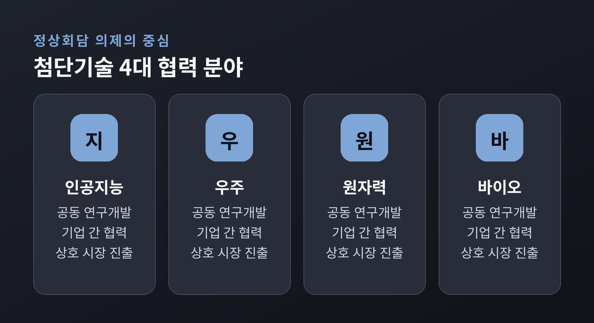
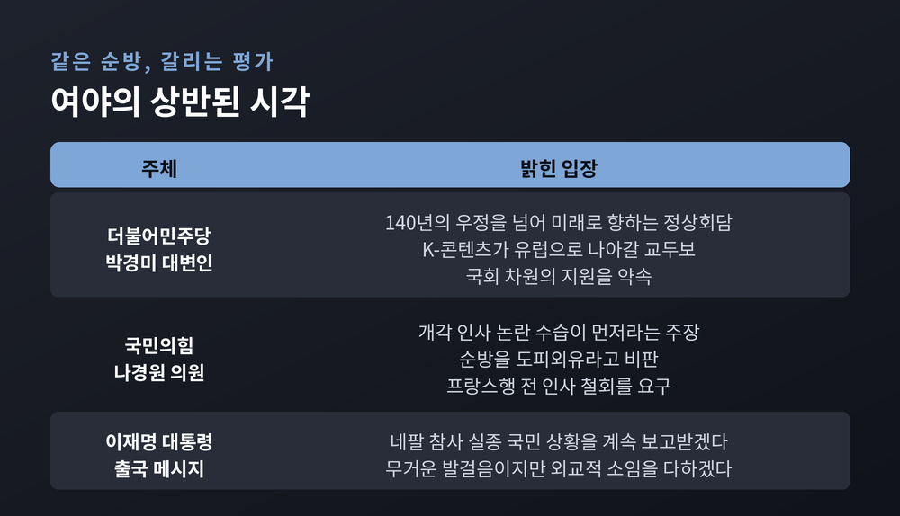

이번 글에서는 2026년 9월 6일 시작된 이재명 대통령의 프랑스 국빈방문을 정리해 보겠습니다.
정상회담 의제가 무엇이고, 왜 하필 지금 프랑스인지, 그리고 국내에서는 어떤 논쟁이 함께 걸려 있는지 차례로 살펴보겠습니다.
정상회담은 9월 8일에 열립니다. 결과가 아직 나오지 않은 사안이므로, 확인된 사실과 전망을 구분해 적겠습니다.
이재명 대통령은 6일 오전 경기 성남 서울공항에서 공군 1호기 편으로 프랑스로 향했습니다. 김혜경 여사가 동행했습니다.
일정은 9월 6일부터 9일까지 3박 5일입니다. 에마뉘엘 마크롱 프랑스 대통령의 초청에 따른 국빈방문입니다.
공항에는 강훈식 청와대 비서실장과 홍익표 정무수석이 나왔습니다. 김민석 더불어민주당 대표, 한병도 원내대표, 윤호중 행정안전부 장관, 박윤주 외교부 제1차관, 필로멘 로뱅 피에롱 주한 프랑스 대사대리도 배웅에 함께했습니다.
일정은 크게 두 덩어리로 나뉩니다. 앞쪽은 프랑스 남부, 뒤쪽은 파리입니다.
7일에는 남부 소도시 생폴드방스에서 열리는 '뤼미에르 서밋'에 마크롱 대통령과 공동의장 자격으로 참석합니다.
8일에는 파리로 옮겨 개선문 무명용사의 묘에 헌화한 뒤 공식환영식에 참석합니다. 이어 엘리제궁에서 단독 오찬을 하고, 양국 대표단이 배석하는 확대 정상회담을 엽니다. 같은 날 한-프랑스 비즈니스 라운드테이블과 국빈만찬이 이어집니다.
마지막 날인 9일에는 야엘 브론-피베 프랑스 하원의장을 만나고, 동포 오찬 간담회를 가진 뒤 마티아스 코먼 경제협력개발기구(OECD) 사무총장을 접견합니다.

첫째 이유는 시차입니다.
지난 4월 마크롱 대통령이 한국을 국빈 방문했습니다. 그로부터 다섯 달 만에 이재명 대통령이 프랑스를 국빈 방문합니다. 두 나라 정상이 5개월 간격으로 상호 국빈방문을 주고받는 것은 흔한 일이 아닙니다.
둘째 이유는 4월에 만들어진 약속의 후속이라는 점입니다.
당시 두 정상은 양국 관계를 '글로벌 전략적 동반자 관계'로 격상했습니다. 2004년 '21세기 포괄적 동반자 관계'를 맺은 지 22년 만의 격상입니다. 공동성명과 함께 3개 협정을 개정하고 11개 양해각서를 체결했습니다.
예전의 한-프랑스 관계가 문화 교류 중심이었다면, 지금은 첨단기술과 안보가 앞으로 나온 구도입니다. 이번 순방은 그 격상된 틀에 내용을 채워 넣는 자리로 설계돼 있습니다.
셋째 이유는 상대의 무게입니다. 프랑스는 유럽연합(EU) 내 2위이자 세계 7위 경제국이고, 유엔 안전보장이사회 상임이사국이며, 올해 주요 7개국(G7) 정상회의 의장국입니다.
여기에 2026년은 1886년 조불수호통상조약 이후 수교 140주년이 되는 해이기도 합니다. 마크롱 대통령의 초청 자체가 이 상징성 위에 놓여 있습니다.

이번 순방의 첫 일정이자 가장 낯선 이름이 뤼미에르 서밋입니다.
프랑스 대통령실은 지난 7월 22일 보도자료를 통해 이 회의를 "영화와 영상의 미래에 헌정된 최초의 국제 정상회의"로 소개했습니다. 명칭은 영화를 처음 만든 뤼미에르 형제에서 따왔습니다.
규모는 5대륙 30개국 이상에서 온 고위급 인사 150명입니다. 영화·시청각·비디오게임 산업의 국제 경영진과 의사결정자, 정치 지도자, 창작자가 함께 자리합니다.
의제로 명시된 것은 세 가지입니다. 인공지능이 영상 산업에 미치는 영향, 어린 시절부터의 미디어 리터러시 교육, 그리고 산업의 경제 모델입니다. 한국 언론이 전한 청와대 설명도 이와 같습니다.
청와대는 이 자리를 K-콘텐츠와 국내 기업의 유럽·세계시장 진출 기반을 넓히는 계기로 보고 있습니다. 영상 산업의 오랜 규범을 만들어 온 프랑스와, 최근 세계 시장에서 존재감을 키운 한국이 공동의장을 맡는 구도이기 때문입니다.
다만 이 부분은 신중하게 볼 필요가 있습니다. 서밋은 구속력 있는 조약을 맺는 자리가 아니라 의제를 설정하고 합의를 선언하는 자리입니다. 실제 시장 진출로 이어질지는 이후 후속 조치에 달려 있습니다.

청와대가 사전에 공개한 8일 확대 정상회담의 틀은 이렇습니다.
큰 주제는 급변하는 국제질서에 대한 대응입니다. 그 아래 안보, 경제, 과학기술, 문화·인적교류 네 갈래의 협력 확대 방안이 놓입니다.
가장 구체적으로 거론되는 것은 첨단기술 네 분야입니다. 인공지능, 우주, 원자력, 바이오입니다.
이 네 분야에서 논의되는 협력 방식도 세 가지로 정리돼 있습니다. 공동 연구개발, 기업 간 협력, 상호 시장 진출입니다. 청년과 과학기술 분야 교류를 안정적으로 늘리기 위한 제도적 지원 방안도 협의 대상에 올라 있습니다.
회담 뒤에는 양국 기업 20여 곳이 참여하는 한-프랑스 비즈니스 라운드테이블이 열립니다. 저녁에는 마크롱 대통령 부부가 엘리제궁에서 여는 국빈만찬이 예정돼 있습니다.
위성락 국가안보실장은 이번 방문을 두고 "새로운 140년을 위한 기반을 튼튼히 다지는 출발점"이라고 설명했습니다.
한 가지 짚어둘 점이 있습니다. 양국 교역 규모를 두고는 자료마다 수치가 엇갈립니다. 130억 유로대로 소개하는 자료가 있는가 하면 160억 유로대를 사상 최고치로 제시하는 자료도 있고, 목표치는 달러로 표기된 경우가 많습니다. 기준 연도와 통화 단위가 달라 단순 비교가 어렵습니다. 이 글에서는 특정 금액을 확정된 사실처럼 쓰지 않겠습니다.

외교 일정만 놓고 보면 명확합니다. 그러나 이 순방은 조용한 시기에 출발한 것이 아닙니다.
가장 무거운 현안은 호르무즈 해협입니다.
트럼프 미국 대통령은 이란과의 전쟁이 시작된 뒤 소셜미디어를 통해 한국과 일본 등에 해협 봉쇄 대응을 위한 군함 파병을 요구했습니다. 이후에도 여러 차례 불만을 드러냈습니다. 9월 4일에는 미 행정부 고위 당국자가 "우리는 여전히 한국이 중동 지역에 자원을 전개하기를 기다리고 있다"고 밝혔습니다. 사실상의 압박으로 읽힙니다.
정부의 입장은 아직 열려 있습니다. 청와대 관계자는 "군사적 기여에는 전투도 있고 비전투도 있고 다양한 옵션이 있을 수 있어 검토하고 있다"고 했습니다. 이 대통령도 같은 날 시민사회단체 간담회에서 "아직 진척된 것은 없다"면서 "고민하고 있다"고 답한 것으로 전해졌습니다.
우선 검토 대상으로 거론되는 것은 해상초계기나 군수지원함처럼 비전투 목적 자산이라고 알려졌습니다. 다만 매체마다 언급하는 전력의 범위가 조금씩 다르고, 정부의 공식 확정 발표는 아직 없습니다.
이 대통령은 미국뿐 아니라 영국과 프랑스 등 유럽 국가들과도 안전항행 확보 방안을 논의하고 있다고 밝혔습니다. 그래서 이번 정상회담에서 관련 협의가 있을지 주목하는 시선이 있습니다.
여기서 한 가지는 분명히 해두겠습니다. 호르무즈 문제가 한-프랑스 정상회담의 공식 의제로 확정된 것은 아닙니다. 언론이 전한 것은 "거론될 가능성"이지 "확정된 의제"가 아닙니다.
국내 정치 상황도 순방 평가에 영향을 주고 있습니다.
한국갤럽이 9월 1일부터 3일까지 전국 만 18세 이상 1,001명을 조사한 결과, 대통령 직무수행 긍정 평가는 40%, 부정 평가는 51%였습니다. 긍정은 취임 후 최저, 부정은 취임 후 최고입니다. 정당 지지도는 민주당 38%, 국민의힘 30%로 격차가 8%포인트로 좁혀졌습니다. 부정 평가의 이유로는 부동산 정책이 23%로 5주째 가장 많았고, 경제·민생 11%, 인사 9%가 뒤를 이었습니다.
이 국면에서 여야의 평가는 정면으로 갈립니다.
더불어민주당 박경미 대변인은 서면 브리핑에서 "140년의 우정을 넘어 미래로 향하는 한·불 정상회담"이라며 국회 차원의 지원을 약속했습니다. 뤼미에르 서밋에 대해서는 프랑스의 영상 예술 전통과 K-콘텐츠의 만남이 "유럽과 글로벌 시장으로 뻗어 나갈 교두보"가 될 것이라고 평가했습니다.
반면 국민의힘 나경원 의원은 페이스북에 "온 나라가 개각 인사 참사로 쑥대밭인데, 정작 사태를 수습해야 할 임명권자는 파리행"이라며 "도피외유"라고 비판했습니다. 프랑스로 가기 전에 인사부터 바로잡으라는 주장입니다.
이 대통령은 출국 직전 소셜미디어에 네팔 홍수 참사로 실종된 국민 아홉 명을 언급하며 "무거운 발걸음이지만, 국익과 미래 세대를 위한 외교적 소임 역시 흔들림 없이 다하겠다"고 적었습니다.
같은 순방을 두고 "국익을 위한 외교"라는 평가와 "현안을 두고 떠난 외유"라는 평가가 동시에 존재합니다. 어느 쪽이 옳은지는 이 글이 판단할 문제가 아닙니다. 다만 양쪽 주장이 무엇인지는 정확히 아는 편이 낫다고 생각합니다.

정상회담이 끝나면 확인할 지점은 몇 가지로 좁혀집니다.
첫째, 공동성명이나 문서의 실질입니다. 4월 방한 때는 3개 협정 개정과 11개 양해각서가 나왔습니다. 이번에는 어떤 분야에서 몇 건이 나오는지, 그리고 그것이 선언에 그치는지 이행 일정을 담는지가 관건입니다.
둘째, 첨단기술 네 분야 가운데 어디에 무게가 실리는지입니다. 인공지능·우주·원자력·바이오를 나란히 늘어놓았지만, 실제 합의는 대체로 한두 분야에 집중되기 마련입니다.
셋째, 비즈니스 라운드테이블에 참여한 기업 20여 곳에서 나오는 후속 계약과 투자입니다. 기업 간 협력은 정상 간 선언보다 시간이 걸리지만 성과가 눈에 보이는 영역입니다.
넷째, 호르무즈 문제입니다. 회담 이후 발표나 브리핑에서 안전항행 관련 언급이 나오는지가 하나의 신호가 될 것입니다. 다만 앞서 적었듯 확정된 의제가 아니므로, 언급이 없다고 해서 이상한 일도 아닙니다.
한계도 함께 적어 두겠습니다. 국빈방문은 형식과 상징의 비중이 큰 외교 형태입니다. 의전과 만찬, 헌화와 공동의장직은 그 자체로 메시지이지만, 국민의 삶에 닿는 변화로 옮겨지려면 시간이 필요합니다. 5개월 만의 상호 국빈방문이라는 사실만으로 성과를 예단하기는 이릅니다.
정리하면 이렇습니다.
이번 순방은 4월에 격상된 관계에 내용을 채워 넣는 자리이고, 국내에서는 파병 논란과 낮아진 지지율이라는 두 겹의 배경 위에 놓여 있습니다.
"외교의 성과는 사진이 아니라 이후의 문서로 남습니다."
9월 8일 회담이 끝난 뒤 어떤 문서가 남는지, 그 한 가지만 확인하셔도 이번 순방의 무게를 가늠하실 수 있을 것입니다.